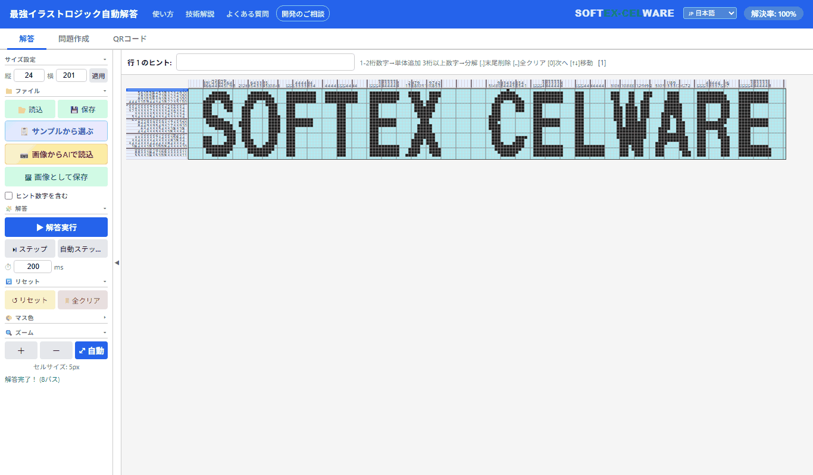
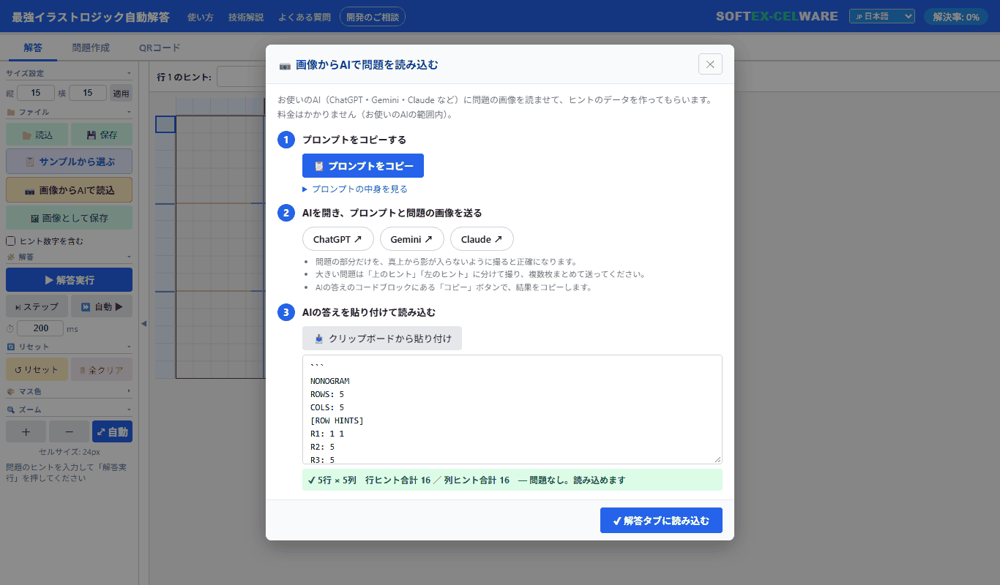
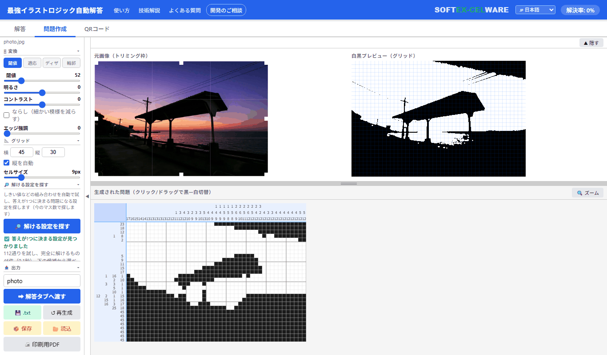
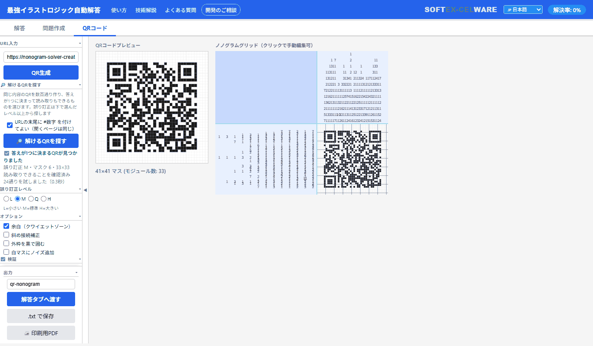

How to use
The Ultimate Nonogram Solver is a free web app that solves nonograms (also known as picross, griddlers, hanjie or paint by numbers) automatically, and creates new puzzles from photos and QR codes. Nothing to install: it runs in your browser, and your puzzles and images are processed locally and never sent to a server.
1. Solve a puzzle

- Set the number of rows and columns under "Grid Size" and press "Apply" (up to 300 × 300).
- Type the clues into the input field above the grid, starting with row 1. Separate numbers with spaces and press Enter.
- Input rules: a 1–2 digit number is one clue, a number with 3+ digits is split into single digits (
312→ 3, 1, 2),.deletes the last clue,..clears the line,0moves to the next line, and ↑↓ move between lines. You can also click a clue cell to jump to that line. - Press "▶ Solve". Use "⏯ Step" or "⏩ Auto" to watch the solving process step by step.
The solver uses pure logic, just like a human, and never guesses. If some cells stay undecided, either the puzzle does not have a unique solution or a clue was entered incorrectly.
2. Load a puzzle
- File: "📂 Load" opens a saved puzzle (.txt).
- Samples: "📋 Select sample" loads a built-in puzzle.
- Import from image (AI): photograph or scan a puzzle from a magazine and let your own AI (ChatGPT, Gemini, Claude, …) read the clues for you.

- Press "Import from image (AI)" and then "Copy prompt".
- Open ChatGPT, Gemini or Claude and send the prompt together with the puzzle image. For large puzzles, photograph the top clues and the left clues separately.
- Copy the code block from the AI's answer and paste it into the app. The app checks the number of rows and columns and whether the row and column totals match, and points to any suspicious line.
- Press "Load into solver".
3. Create a puzzle from a photo

- Open the "Creator" tab and press "📂 Select Image" (drag and drop works too). Adjust the crop frame on the original image.
- Set the number of columns (rows follow the aspect ratio). 30–60 columns is a good start.
- Press "Find solvable settings". The app tries many combinations of threshold, smoothing and clean-up, and shows thumbnails of candidates that are uniquely solvable. Click one that looks most like your photo.
- Click or drag on the grid to edit cells by hand, then press "Validate solution" to check that the solution is still unique.
- Use "➡ Send to Solver", "💾 .txt" or "🖨 Print PDF".
Tip: dithering and outline modes rarely give a unique solution. Photos with clear contrast (silhouettes, backlight) make the best puzzles.
4. Create a puzzle from a QR code

- Enter a URL on the "QR Code" tab.
- Press "Find a solvable QR". The app builds hundreds of QR codes with the same content and picks one that is uniquely solvable and still scans — each candidate is verified by actually decoding it.
- Allowing a "#number" at the end of the URL makes it easier to find one (the same page opens).
- Use "Send to Solver" or "🖨 Print PDF" — great for events and puzzle hunts.
5. Save and print
- "💾 Save" stores the clues as .txt (the same format as the Excel VBA version).
- "🖼 Save as Image" exports the grid as PNG, optionally with clue numbers ("Include hint numbers").
- "🖨 Print PDF" (Creator and QR Code tabs) prints the puzzle with automatic page orientation.
- Collapse the left menu with "◀" to give the grid more room.
Available in 12 languages: English, Japanese, Chinese (Simplified and Traditional), Korean, French, German, Italian, Spanish, Russian, Turkish and Polish. Works in browsers on PCs, phones and tablets.